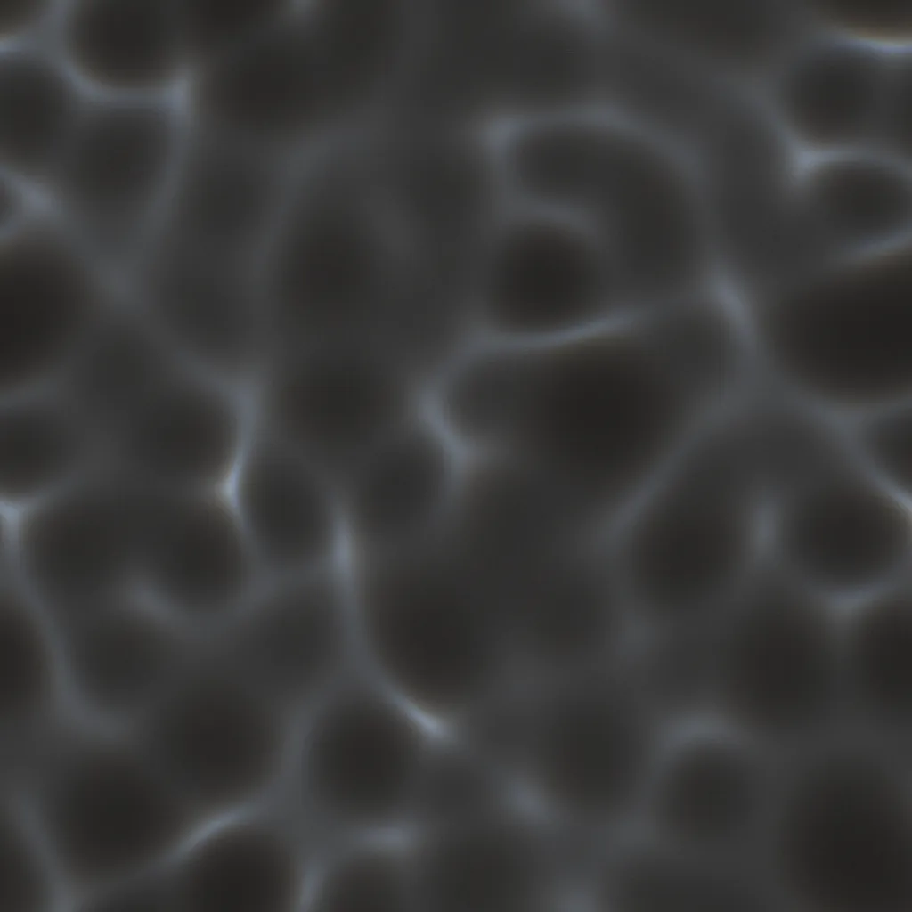
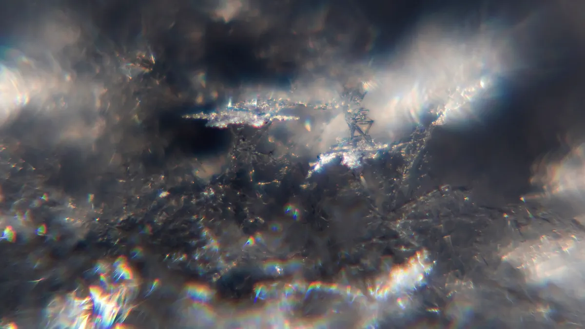
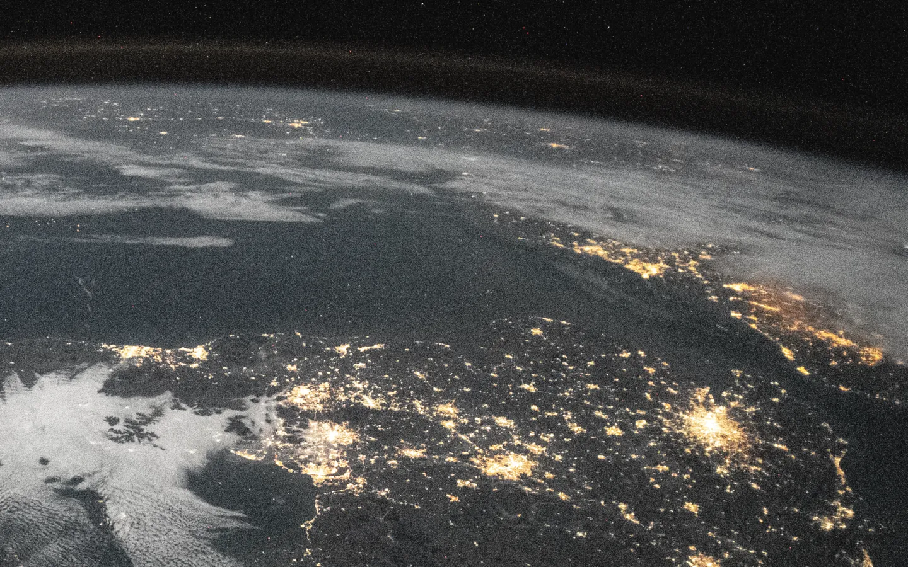
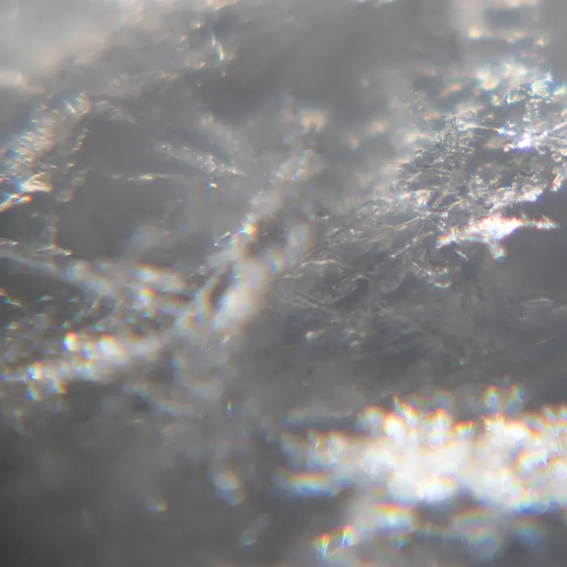

Albretsen ASNorwayon Google Play since 2016
Asgeir
Albretsen
Builds software that pays for itself. Apps, SaaS and the plumbing AI agents run on, from a small company in Norway.
claude mcp add albretsen https://albretsen.no/mcp
01 / products
What runs here.
Each one is cast in glass and lit from the side. The colour you see is the product's own; everything else is grey. Drag the top plate away to cycle, click it to turn it over.

Nothing here is painted. Each plate is a ray trace: the real icon becomes a slab of glass, light passes through it in thirty wavelengths, and every fringe is where they part.
- bands
- 28–30, CIE 1931
- rays
- 2–3 per pixel
- tone
- filmic, 0.8% grain
Retired · seven echoes
Shipped, learned from, switched off. Hover a plate for what it was.

Small, precise things. Light does the rest.

02 / where
Built in the dark half of the year.
Albretsen AS is one developer in Norway with a day job, a company and a habit of shipping. Apps since 2016, consulting since 2021, the company since 2026. It builds what pays: apps, SaaS and infrastructure for AI agents.
